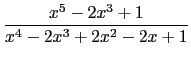

suivant: Décomposition en éléments simples
monter: Les fractions rationnelles
précédent: Partie entière et fractionnaire
Table des matières
Index
Décomposition en éléments simples : partfrac
partfrac a comme argument une fraction rationnelle.
partfrac renvoie sa décomposition en éléments simples.
Exemple :
Décomposer en éléments simples la fraction rationnelle :

On utilise la commande partfrac.
On peut aussi utiliser convert avec l'option parfrac ou
partfrac ou fullparfrac (voir aussi 6.22.25).
On tape :
partfrac((x^5-2*x^3+1)/(x^4-2*x^3+2*x^2-2*x+1))
On obtient en mode réel:
x+2-1/(2*(x-1))+(x-3)/(2*(x^2+1))
On obtient en mode complexe :
x+2+(-1+2*i)/((2-2*i)*((i)*x+1))+1/(2*(-x+1))+
(-1-2*i)/((2-2*i)*(x+i))
Documentation de giac écrite par Renée De Graeve